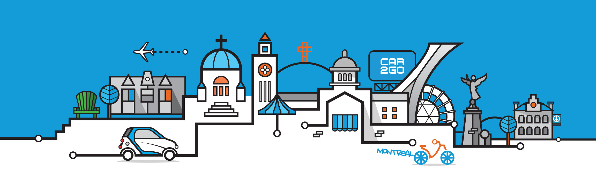
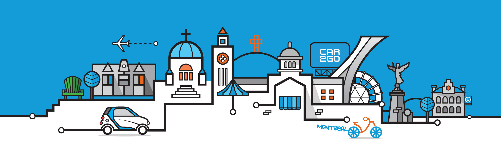
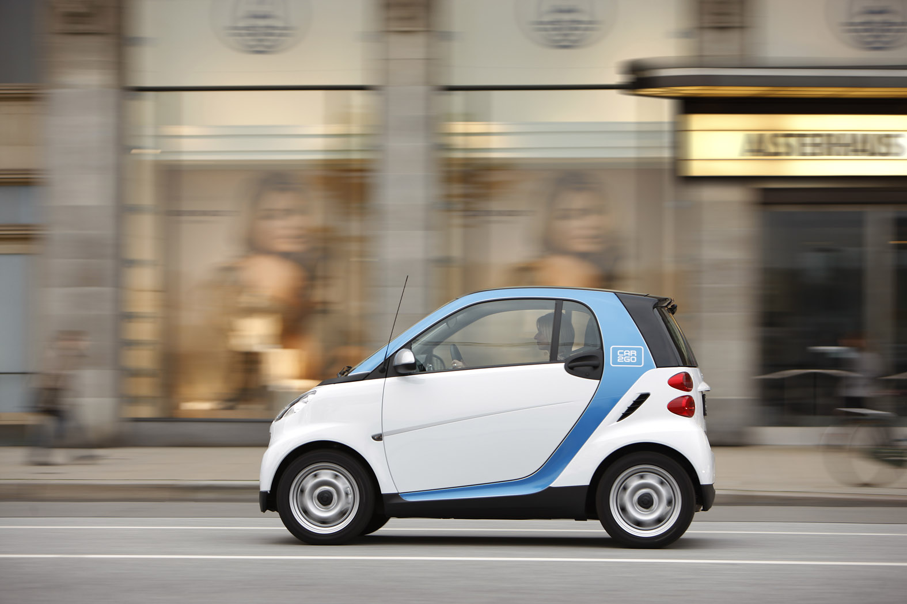
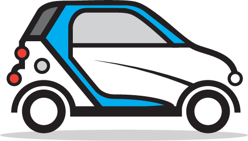

car2go CityLine Illustration
car2go reached out to Station 16 Art Gallery in Montreal to commission Loogart to create its own CityLine illustration to be used on promotional products for a company event.
 

Scroll
The Smart Car
Using car2go's branding, color palette and popular Smart Car vehicle, Loogart was able to integrate the Montreal scene with the company's visual cues. The Smart Car was illusrated in the style of the the CityLine with bold lines and circular anchors.
Loogart's version of car2go' Smart Car can be seen below.
CityLine Versions
The original version had a very strong spotlight on Little Italy due to its contrasting colors and the fact that I included two cars in one design. The final design, where I refined the visual balance, includes the graffiti style "Montreal" text which in my opinion makes the design so much cooler!